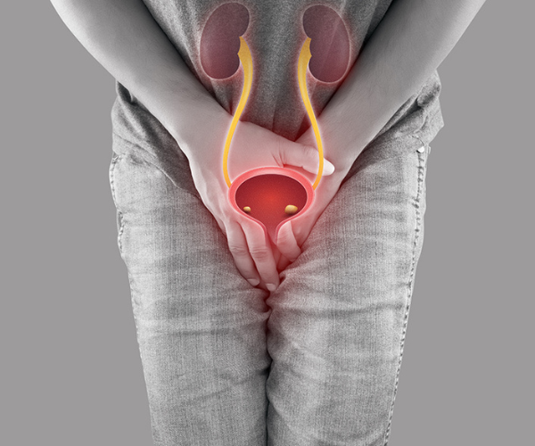

Exectile Dysfunction

Focused Extracorporeal Shock Wave Therapy (ESWT): Revitalizing Wellness
Targeted Extracorporeal Shock Wave Therapy, available at Aruna Hospital Couples Clinics, is a non-invasive medical procedure that uses shock waves to stimulate healing and improve blood circulation in specific areas of the body become bodies. .
Procedure Overview:
Assessment: Our experienced specialists will assess your specific condition to determine whether ESWT is the right treatment option for you.
Concentrated treatment: During the treatment, targeted shock waves are delivered to the affected area, promoting tissue regeneration and relieving pain.
Pleasant Experience: ESWT is generally painless and requires no anesthesia or downtime.
Benefits: ESWT has been proven effective in treating a variety of conditions, including musculoskeletal pain, erectile dysfunction, and more.
Recovery: Most patients can return to their daily activities immediately after the procedure.
If you are looking for a non-invasive and effective solution to your condition, contact Aruna Hospital Couples Clinic to learn more about how targeted extracorporeal shockwave therapy can help you revive your well-being.